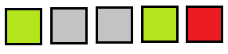

Задача 4. Однорядковий сапер. Однорядкова таблиця, до клітинок якої додано
інформацію про наявність міни (використати атрибути). Спочатку клітинки
сірі. При натисненні на клітинку аналізується чи є там міна і тоді колір
стає червоним, якщо немає – зеленим. Додати можливість відкриття усіх
сусідніх незамінованих клітинок при відкритті незамінованої клітинки.
